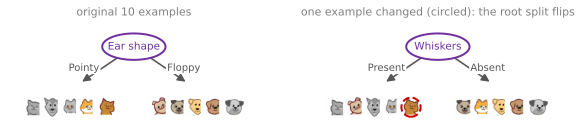
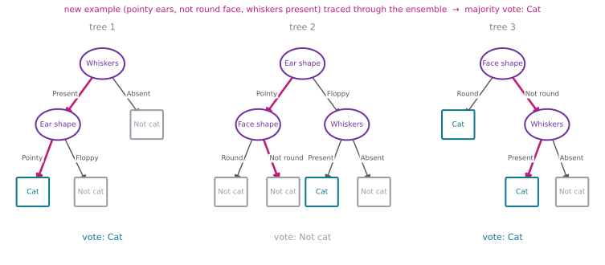
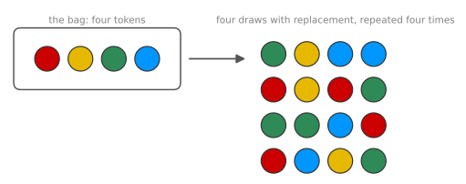
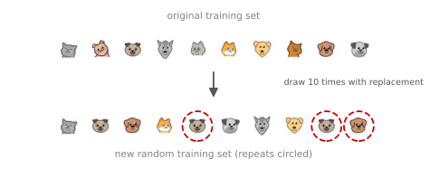
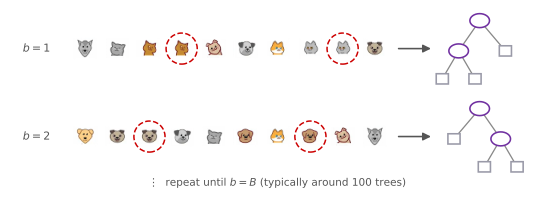
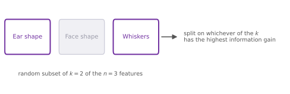
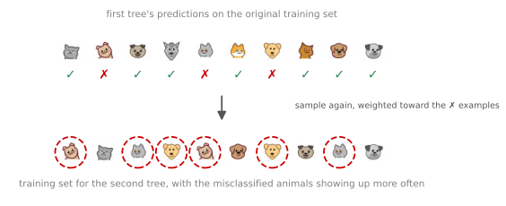
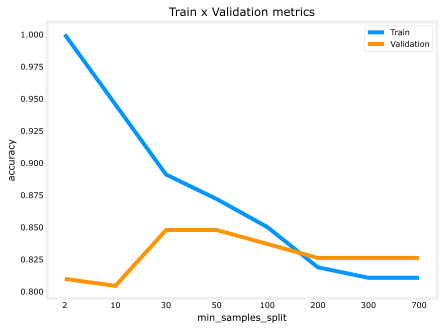
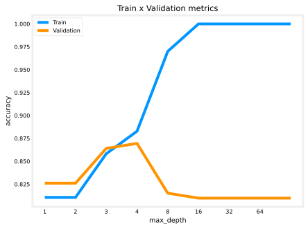
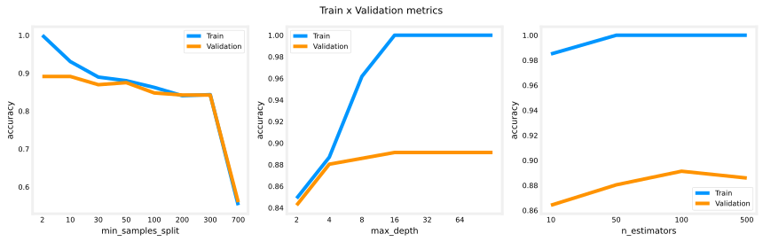

Tree Ensembles
machine-learning
neural-networks
Tree ensembles from sampling with replacement to random forests and XGBoost, plus when to choose decision trees versus neural networks.
The decision tree learning algorithm builds one tree from a training set. One of the weaknesses of using a single decision tree is that it can be highly sensitive to small changes in the data. One solution that makes the algorithm less sensitive, more robust, is to build not one decision tree but a lot of them, a tree ensemble.
Sensitivity of a Single Tree
With the running example, the best feature to split on at the root node turned out to be ear shape, resulting in the two subsets of pointy-eared and floppy-eared animals, with further sub-trees built on each. But take just one of the ten examples and change it to a different cat, instead of an animal with pointy ears, a round face, and whiskers absent, this new cat has floppy ears, a round face, and whiskers present. With just that single training example changed, the highest-information-gain feature to split on becomes the whiskers feature instead of the ear shape feature.
As a result, the subsets of data in the left and right sub-trees become totally different, and as the algorithm keeps running recursively, it builds out totally different sub-trees on each side. The fact that changing just one training example causes the algorithm to come up with a different split at the root, and therefore a totally different tree, makes the algorithm not that robust. (Running the information gain numbers confirms it. On the original data the gains are 0.28 for ear shape, 0.03 for face shape, and 0.12 for whiskers, and after changing that one example they become 0.12, 0.03, and 0.28, ear shape and whiskers swap places exactly.)
That is why, when using decision trees, you often get a much better result, more accurate predictions, by training not just a single decision tree but a whole bunch of different ones.
Review Questions
1. What does it mean that a single decision tree is “not robust”?
TipAnswer
Small changes in the training data can produce large changes in the learned model. In the example, replacing just one of the ten animals with a slightly different cat flipped the best root split from ear shape to whiskers, and from that point on the entire tree, both sub-trees and all the leaves, came out completely different.
1. Why does a different root split lead to a “totally different” tree rather than just a different first level?
TipAnswer
Because the algorithm is recursive. The root split determines which subsets of examples flow into the left and right branches, and every later decision is computed from those subsets. Change the subsets at the top and every information gain calculation below sees different data, so the entire structure downstream changes with it.
Voting with an Ensemble of Trees
A tree ensemble just means a collection of multiple trees. The next sections cover how to construct one, but supposing you already had an ensemble of three trees, each one a plausible way to classify cat versus not cat, here is how it makes predictions. Run all three trees on the new example and get them to vote on the final prediction.
Take a new test example with pointy ears, a not-round face shape, and whiskers present, and trace it through each tree.

The first tree carries out its inference and predicts cat. The second tree’s inference follows its own path and predicts not cat. The third tree predicts cat. The three trees have made different predictions, so they vote, and the majority vote among the three predictions is cat. The final prediction of the ensemble is that this is a cat, which happens to be the correct prediction.
The reason a tree ensemble works is that with lots of decision trees voting, the overall algorithm becomes less sensitive to what any single tree does, because each tree gets only one vote out of three, or one vote out of many. That makes the overall algorithm more robust.
But how do you come up with all of these different, plausible, but slightly different decision trees to get them to vote? The next section introduces a technique from statistics called sampling with replacement, a key building block for constructing the ensemble.
Review Questions
1. How does a tree ensemble make a prediction for a new example?
TipAnswer
Run the example through every tree in the ensemble, collect each tree’s prediction, and take the majority vote as the final prediction. In the example, the three trees voted cat, not cat, and cat, so the ensemble predicted cat.
1. Why does voting across many trees make the algorithm more robust than a single tree?
TipAnswer
Any single tree can be swayed by small quirks of the training data, as the flipped-root example showed. In an ensemble, each tree gets only one vote out of many, so no individual tree’s peculiarities can dominate the final prediction, and the errors of individual trees tend to get outvoted by the rest.
1. A new animal has floppy ears, a round face, and no whiskers. Using the three trees in the figure above, what does each tree predict, and what is the ensemble’s final prediction?
TipAnswer
Tree 1 sends absent whiskers directly to its not-cat leaf. Tree 2 sends floppy ears to its whiskers node, where absent whiskers gives not cat. Tree 3, however, sends the round face directly to its cat leaf, a dissenting vote. The tally is two votes for not cat against one for cat, so the ensemble predicts not cat by majority rather than unanimously.
Sampling with Replacement
Building a tree ensemble requires a technique called sampling with replacement. To illustrate it, imagine four tokens colored red, yellow, green, and blue, dropped into an (empty) black velvet bag. Sampling four times with replacement means shaking the bag, picking a token without looking, say green, and then, this is the “replacement” part, putting it back in before shaking and drawing again. The next draws might give yellow, then blue, then blue again, for the sequence green, yellow, blue, blue.
Notice that blue came out twice, and red did not come out even a single time. Repeating the whole procedure gives different sequences each time, maybe red, yellow, red, green, or green, green, blue, red, or a draw like red, blue, yellow, green that happens to contain all four.

The with replacement part is critical. Without replacing each token after drawing it, pulling four tokens from a bag of four would always produce the same four tokens, just in a different order. Replacing each token before the next draw is what makes the outcome genuinely random.
Building a New Training Set
The way sampling with replacement applies to tree ensembles is by constructing multiple random training sets that are all slightly different from the original training set. Take the 10 examples of cats and dogs and put them in a theoretical bag. (Please do not put a real cat or dog in a bag, that sounds inhumane, but a training example can go in a theoretical bag whenever you want.)
Using this theoretical bag, create a new random training set of 10 examples, the exact same size as the original dataset. Reach in, pick a random training example, write it down, put it back, and draw again, 10 times in total.

Along the way, the fifth training example drawn turns out to be identical to the second one, and that is fine. Keep going, and more repeats show up, and so on, until there are 10 training examples, some of which are repeats. Notice also that this new training set does not contain all 10 of the original training examples, and that is okay too. It is part of the sampling with replacement procedure.
Sampling with replacement lets you construct a new training set that is a little bit similar to, but also pretty different from, the original training set. This turns out to be the key building block for building an ensemble of trees, which is what the next section covers.
Review Questions
1. Why is the “with replacement” part of the procedure critical?
TipAnswer
Without replacement, drawing 10 examples from a bag of 10 would always return exactly the original training set, just shuffled. Replacing each example before the next draw is what allows repeats and omissions, so every sampled training set comes out genuinely different, which is the entire point of the procedure.
1. A new training set is created from 10 examples by sampling with replacement. Which properties does it have?
It has 10 examples, all distinct, in a random order
It has 10 examples, possibly with repeats, and possibly missing some of the originals
It has fewer than 10 examples, since repeats get removed
It always contains every original example at least once
TipAnswer
b. The new set has the same size as the original (10 draws), but because every draw goes back in the bag, some examples appear multiple times and, in consequence, others do not appear at all. Options (a) and (d) describe sampling without replacement, and repeats are kept, not removed (c).
1. In the token demonstration, one sequence of four draws came out green, yellow, blue, blue. What does this single sequence illustrate about sampling with replacement?
TipAnswer
Both characteristic behaviors at once. A token can be drawn more than once (blue appeared twice), and a token can fail to be drawn at all (red never appeared), even though every token was in the bag for every draw.
1. What does sampling with replacement refer to?
Drawing a sequence of examples where, when picking the next example, first replacing all previously drawn examples into the set we are picking from
Using a new sample of data to permanently overwrite (that is, to replace) the original data
Drawing a sequence of examples where, when picking the next example, first removing all previously drawn examples from the set we are picking from
A process of making an identical copy of the training set
TipAnswer
a. Every drawn example goes back into the bag before the next draw, which is what allows repeats and omissions. Option (c) describes sampling without replacement, which from a full-size draw would just return the original set, and options (b) and (d) misread “replacement” entirely, nothing about the original data gets overwritten or copied.
Random Forest Algorithm
With sampling with replacement providing new training sets that are a bit similar to, but also quite different from, the original training set, everything is in place to build a first tree ensemble algorithm, and then improve it into the random forest algorithm, a powerful ensemble method that works much better than a single decision tree.
Bagged Decision Trees
Given a training set of size \(m\), generate the ensemble as follows, repeating \(B\) times in total.
For \(b = 1\) to \(B\):
- Use sampling with replacement to create a new training set of size \(m\). With 10 training examples, put all 10 in that virtual bag and sample with replacement 10 times to generate a new training set of 10 examples, some of them repeated, and that is okay.
- Train a decision tree on the new dataset.
The first sampled dataset produces one decision tree. Repeating the procedure produces another training set that again looks a bit like the original but is also a little different, and training on it gives a somewhat different decision tree, and so on, \(B\) times.

Having built an ensemble of, say, 100 different trees, a prediction works by having all the trees vote on the final answer, exactly as in the voting section above. A typical choice of \(B\), the number of trees, is around 100, with recommendations ranging from about 64 to 128. Setting \(B\) larger never hurts performance, but beyond a certain point the returns diminish, and performance does not get much better once \(B\) is much larger than 100 or so. There is no point using, say, 1,000 trees, that just slows down the computation significantly without meaningfully increasing the performance.
This specific creation of a tree ensemble is sometimes called a bagged decision tree, referring to putting the training examples in that virtual bag, which is also why the letters \(b\) and \(B\) are used for the loop.
From Bagging to a Random Forest
There is one modification that makes the algorithm work even better, and it changes bagged decision trees into the random forest algorithm. The key observation is that even with sampling with replacement, the trees often end up using the same split at the root node and very similar splits near the root. That did not happen in the one-example-change demonstration above, where a small change produced a different root split, but for other training sets it is not uncommon that many or even all \(B\) sampled training sets produce the same choice of feature at the root and at a few nodes nearby.
The fix is to further randomize the feature choice at each node, which causes the set of trees to become more different from each other, so that when they vote, the result is even more accurate. At every node, when choosing a feature to split on, if \(n\) features are available, rather than picking from all \(n\) features, pick a random subset of \(k < n\) features, and allow the algorithm to choose only from that subset. Out of those \(k\) features, choose the one with the highest information gain as usual.

When \(n\) is large, say dozens or even hundreds of features, a typical choice for \(k\) is \(\sqrt{n}\). With only three features, as in the cat example, the technique does not have much to work with, and it tends to be used for larger problems with more features. With this further change, the algorithm becomes the random forest, which typically works much better than, and is much more robust than, a single decision tree.
One way to think about why it is more robust is that the sampling with replacement procedure already causes the algorithm to explore a lot of small changes to the data while training the different trees, and the vote averages over all of those changes. Any further little change to the training set is therefore less likely to have a huge impact on the output of the overall random forest, because it is a change the ensemble has, in a sense, already averaged over.
TipWhere does a machine learning engineer go camping?
In a random forest.
The random forest is an effective algorithm. Beyond it, there is one other algorithm that works even better, a boosted decision tree, and the next section covers a boosted tree algorithm called XGBoost.
Review Questions
1. Write out the bagged decision tree algorithm, and explain where the name “bagged” (and the letter \(B\)) comes from.
TipAnswer
For \(b = 1\) to \(B\), sample with replacement from the \(m\) training examples to create a new training set of size \(m\), then train a decision tree on it. Predictions are made by letting all \(B\) trees vote. The name refers to the virtual bag the training examples get drawn from, which is also why the loop variable is \(b\).
1. What is a typical choice for the number of trees \(B\), and why not use far more, say 1,000?
TipAnswer
Around 100, with common recommendations in the range of roughly 64 to 128. Increasing \(B\) never hurts accuracy, but beyond about 100 trees the returns diminish, so 1,000 trees mostly just slows the computation down significantly without meaningfully improving performance.
1. What single modification turns bagged decision trees into the random forest algorithm, and what problem does it solve?
TipAnswer
At every node, instead of considering all \(n\) features, pick a random subset of \(k < n\) features (typically \(k = \sqrt{n}\) for large \(n\)) and choose the highest-information-gain feature only from that subset. It solves the problem that resampled training sets often still produce the same split at the root and near-root nodes, so the trees come out too similar; randomizing the allowed features makes the trees more different from each other, which makes their vote more accurate.
1. For the random forest, how do you build each individual tree so that they are not all identical to each other?
Sample the training data without replacement
Train the algorithm multiple times on the same training set, which will naturally result in different trees
Sample the training data with replacement and select a random subset of features to build each tree
If you are training \(B\) trees, train each one on \(1/B\) of the training set, so each tree is trained on a distinct set of examples
TipAnswer
c. The two sources of randomness that define the random forest are sampling each tree’s training set with replacement and letting each node choose its split from a random subset of features. Option (b) is a trap, the tree-building algorithm is deterministic, so training repeatedly on the same set produces the exact same tree every time. Sampling without replacement (a) from all \(m\) examples just returns the original training set reshuffled, and disjoint \(1/B\) slices (d) would starve every tree of data.
1. In your own words, why is a random forest more robust to small changes in the training data than a single decision tree?
TipAnswer
The resampling procedure already trains the trees on many slightly perturbed versions of the data, and the majority vote averages over all of those perturbations. A further small change to the training set looks like just one more of the variations the ensemble has already explored and averaged over, so it is unlikely to swing the overall prediction, whereas a single tree can restructure completely, as the flipped-root example showed.
XGBoost
Over the years, machine learning researchers have come up with a lot of different ways to build decision trees and tree ensembles. Today, by far the most commonly used implementation of decision tree ensembles is an algorithm called XGBoost. It runs quickly, the open source implementations are easy to use, and it has been used very successfully to win many machine learning competitions as well as in many commercial applications.
Boosting
XGBoost builds on a modification of the bagged decision tree algorithm that makes it work much better. The loop is the same, for \(b = 1\) to \(B\), create a training set of size \(m\) and train a decision tree on it, with one change applied on every iteration except the first. When sampling, instead of picking from all \(m\) examples with equal probability \(\frac{1}{m}\), make it more likely to pick misclassified examples that the previously trained trees do poorly on.
In training and education there is an idea called deliberate practice. If you are learning to master a piece on the piano, rather than practicing the entire five-minute piece over and over, which is quite time-consuming, you play the piece once and then focus your attention on just the parts you are not yet playing well, practicing those smaller parts over and over. That turns out to be a more efficient way to learn. Boosting applies the same idea. Look at what the decision trees trained so far are still not doing well on, and when building the next decision tree, focus more attention on exactly those examples.
In detail, after building the first tree, go back to the original training set, note, the original one, not a set generated through sampling with replacement, and run the tree on all 10 examples, marking each prediction correct or incorrect. On the second time through the loop, sampling with replacement still generates a set of 10 examples, but each draw now gives a higher chance of picking one of the examples the tree is still misclassifying.

This focuses the second decision tree’s attention, through a process like deliberate practice, on the examples the algorithm is still not doing well on. The boosting procedure does this for a total of \(B\) times. On each iteration, look at what the ensemble of trees \(1, 2, \dots, b-1\) is not yet doing well on, and when building tree number \(b\), give a higher probability to the examples the previously built ensemble still gets wrong. This helps the learning algorithm learn to do better more quickly. The mathematical details of exactly how much to increase the probability of picking one example versus another are quite complex, but you do not have to worry about them to use boosted tree implementations.
XGBoost in Practice
Of the different ways of implementing boosting, the most widely used today is XGBoost, which stands for eXtreme Gradient Boosting, an open source implementation of boosted trees that is very fast and efficient. A few things are worth knowing about it.
- It has a good choice of default splitting criteria and stopping criteria.
- One of its innovations is built-in regularization to prevent overfitting.
- In machine learning competitions, such as on the widely used competition site Kaggle, XGBoost is often highly competitive. XGBoost and deep learning algorithms seem to be the two types of algorithms that win a lot of these competitions.
- One technical note. Rather than actually doing sampling with replacement, XGBoost assigns different weights to different training examples, so it does not need to generate a lot of randomly chosen training sets, which makes it even a bit more efficient. The intuition above about focusing on misclassified examples is still exactly right.
The details of XGBoost are quite complex to implement, which is why most practitioners use the open source library. This is all it takes to use it, shown here on the cat classification data.
from xgboost import XGBClassifier
model = XGBClassifier()
model.fit(X_train, y_train)
y_pred = model.predict(X_test)
print(y_pred)[1]The trained boosted ensemble predicts that the test animal (pointy ears, round face, whiskers present) is a cat. If you want to use XGBoost for regression rather than classification, the classifier line simply becomes XGBRegressor, and the rest of the code works similarly.
That is the XGBoost algorithm. One topic remains for this part of the course, deciding when to use a decision tree versus a neural network.
Review Questions
1. What is the key change boosting makes to the bagged decision tree loop, and on which iterations does it apply?
TipAnswer
On every iteration except the first, the sampling is no longer uniform. Instead of picking each of the \(m\) examples with probability \(\frac{1}{m}\), examples that the ensemble of previously built trees (\(1\) through \(b-1\)) still misclassifies get a higher probability of being picked, so the next tree focuses on them.
1. How does the deliberate practice analogy explain boosting?
TipAnswer
A pianist mastering a piece improves faster by repeatedly practicing just the passages they play badly rather than the whole piece each time. Boosting does the same, each new tree concentrates its training on the examples the current ensemble handles worst, which helps the algorithm learn to do better more quickly than treating all examples equally every time.
1. After training the first tree, on which dataset are its predictions checked to decide which examples get boosted, and why does that matter?
TipAnswer
On the original training set of all 10 examples, not on the resampled set the tree was trained on. That matters because the goal is to find where the ensemble is failing on the actual data it must ultimately do well on, including examples that may not have appeared in the tree’s own sampled training set.
1. Which of the following are true of XGBoost? (Choose all that apply.)
The name stands for eXtreme Gradient Boosting
It has built-in regularization to help prevent overfitting
It literally performs sampling with replacement to build each tree’s training set
It assigns different weights to training examples instead of resampling, which is more efficient
TipAnswer
a, b, and d. Option (c) is the one technical falsehood, XGBoost keeps the boosting intuition of focusing on hard examples, but implements it by weighting examples rather than actually generating many resampled training sets, which avoids that overhead. Its default split and stopping criteria and built-in regularization are part of why it works so well out of the box.
When to Use Decision Trees
Both decision trees, including tree ensembles, and neural networks are very powerful, very effective learning algorithms. When should you pick one or the other? Here are the pros and cons of each.
| Decision trees and tree ensembles | Neural networks | |
|---|---|---|
| Tabular (structured) data | Work well | Work well |
| Unstructured data (images, audio, text) | Not recommended | Preferred |
| Training speed | Fast | Can be slow |
| Human interpretability | Small single trees, yes | Limited |
| Transfer learning | No | Yes, often critical |
| Building multi-model systems | One tree at a time | Networks can be trained together |
Case for Decision Trees
Decision trees and tree ensembles often work well on tabular data, also called structured data, meaning datasets that look like a giant spreadsheet. In the housing price prediction application, for instance, the dataset had features for the size of the house, the number of bedrooms, the number of floors, and the age of the home. Data like that, stored in a spreadsheet with categorical or continuous-valued features, suits decision trees well, for both classification and regression tasks, predicting a discrete category or predicting a number.
In contrast, decision trees and tree ensembles are not recommended on unstructured data, data such as images, video, audio, and text that you are less likely to store in a spreadsheet format. Neural networks tend to work better there.
One huge advantage of decision trees is that they can be very fast to train. Recall the iterative loop of machine learning development. If a model takes many hours to train, that limits how quickly you can go around the loop and improve the algorithm. Because trees and tree ensembles tend to train quickly, they let you iterate faster.
Finally, small decision trees can be human interpretable. A single decision tree with only a few dozen nodes can be printed out and read, showing exactly how it makes its decisions. That said, the interpretability of decision trees is sometimes a bit overstated. An ensemble of 100 trees, each with hundreds of nodes, is difficult to read, and understanding it may need separate visualization techniques.
If you have decided to use a decision tree or a tree ensemble, XGBoost is a solid default for most applications. The one slight downside of a tree ensemble is that it is a bit more expensive than a single decision tree, so with a very constrained computational budget a single tree might be the pick, but otherwise, a tree ensemble, and XGBoost in particular, is almost always the better choice.
Case for Neural Networks
Neural networks, in contrast, work well on all types of data, tabular (structured) data, unstructured data, and mixed data containing both structured and unstructured components. On tabular data, neural networks and decision trees are often both competitive, but on unstructured data, images, video, audio, and text, a neural network really is the preferred algorithm, not a decision tree or tree ensemble.
On the downside, neural networks may be slower to train than a decision tree. A large neural network can just take a long time.
Other benefits of neural networks include working with transfer learning, which is really important, because for many applications only a small dataset is available, and being able to carry out pre-training on a much larger dataset can be critical to getting competitive performance. Finally, when building a system of multiple machine learning models working together, it can be easier to string together and train multiple neural networks than multiple decision trees. The reasons are quite technical and beyond the scope of these notes, but they relate to the fact that multiple networks strung together can all be trained jointly with gradient descent, whereas decision trees can only be trained one at a time.
Course Wrap-Up
That completes the notes for this course on Advanced Learning Algorithms, how to build and use both neural networks and decision trees, along with a variety of practical advice for getting these algorithms to work well. Everything so far has been supervised learning, which needs labeled datasets with the labels \(y\) in the training set. There is another set of very powerful algorithms, unsupervised learning algorithms, which do not even need labels \(y\) to figure out very interesting patterns in the data, and they are the subject of the next course in the specialization.
TipFor the Star Wars fans
May the forest be with you.
Review Questions
1. What is the difference between structured and unstructured data, and which algorithm family suits each?
TipAnswer
Structured (tabular) data looks like a giant spreadsheet of categorical or continuous features, like the housing dataset with size, bedrooms, floors, and age; both decision trees and neural networks are competitive there. Unstructured data, images, video, audio, and text, does not fit a spreadsheet, and neural networks are the preferred algorithm for it; decision trees are not recommended.
1. Why does fast training give decision trees a practical advantage beyond just saving compute?
TipAnswer
Because of the iterative loop of machine learning development. Every improvement cycle requires training, running diagnostics, and adjusting. A model that trains in minutes lets you go around that loop many more times than one that trains for hours, which often matters more for final performance than any single training run.
1. Is “decision trees are interpretable” always a fair claim?
TipAnswer
Only partly. A single small tree, a few dozen nodes, can genuinely be printed and read to see exactly how it decides. But the claim gets overstated for ensembles, since 100 trees with hundreds of nodes each are not readable directly and require separate visualization techniques to understand.
1. You have a small labeled dataset for a new image classification task. Which algorithm family does that point toward, and for which two reasons?
TipAnswer
Neural networks. First, images are unstructured data, where neural networks are preferred and trees are not recommended. Second, the dataset is small, so transfer learning, pre-training on a much larger dataset and fine-tuning, may be critical for competitive performance, and transfer learning is a technique that works with neural networks, not decision trees.
1. Why can multiple neural networks in a larger system be easier to train together than multiple decision trees?
TipAnswer
Networks strung together can all be trained jointly with gradient descent, since everything stays differentiable end to end, whereas decision trees do not train by gradient descent and can only be trained one tree at a time. The full details are technical, but that is the essence.
1. You are choosing between a decision tree and a neural network for a classification task where the input \(x\) is a 100x100 resolution image. Which would you choose?
A decision tree, because the input is unstructured and decision trees typically work better with unstructured data
A decision tree, because the input is structured data and decision trees typically work better with structured data
A neural network, because the input is unstructured data and neural networks typically work better with unstructured data
A neural network, because the input is structured data and neural networks typically work better with structured data
TipAnswer
c. An image is unstructured data, it is not a spreadsheet of meaningful named columns, and neural networks are the preferred algorithm for images, video, audio, and text. Both halves of the answer must be right, the data type (unstructured) and the algorithm suited to it (neural network), which rules out the other three options.
Lab: Tree Ensembles on the Heart Disease Dataset
This lab puts everything on this page into practice on a real dataset, using pandas to one-hot encode categorical features and scikit-learn and XGBoost to train a decision tree, a random forest, and a boosted tree model.
The dataset is the Heart Failure Prediction Dataset from Kaggle (local copy). Cardiovascular disease is the number one cause of death globally, and people at high cardiovascular risk need early detection and management. The dataset contains 11 features that can be used to predict possible heart disease, including the patient’s age and sex, chest pain type, resting blood pressure, cholesterol, fasting blood sugar, resting ECG results, maximum heart rate, exercise-induced angina, and ST slope, with the target HeartDisease equal to 1 or 0. Note that this is exactly the kind of tabular data that the previous section said decision trees do well on.
import numpy as np
import pandas as pd
from sklearn.tree import DecisionTreeClassifier
from sklearn.ensemble import RandomForestClassifier
from sklearn.model_selection import train_test_split
from sklearn.metrics import accuracy_score
from xgboost import XGBClassifier
RANDOM_STATE = 55 # we pass it to every sklearn call to ensure reproducibility
df = pd.read_csv("../../media/heart.csv")
df.head()| Age | Sex | ChestPainType | RestingBP | Cholesterol | FastingBS | RestingECG | MaxHR | ExerciseAngina | Oldpeak | ST_Slope | HeartDisease | |
|---|---|---|---|---|---|---|---|---|---|---|---|---|
| 0 | 40 | M | ATA | 140 | 289 | 0 | Normal | 172 | N | 0.0 | Up | 0 |
| 1 | 49 | F | NAP | 160 | 180 | 0 | Normal | 156 | N | 1.0 | Flat | 1 |
| 2 | 37 | M | ATA | 130 | 283 | 0 | ST | 98 | N | 0.0 | Up | 0 |
| 3 | 48 | F | ASY | 138 | 214 | 0 | Normal | 108 | Y | 1.5 | Flat | 1 |
| 4 | 54 | M | NAP | 150 | 195 | 0 | Normal | 122 | N | 0.0 | Up | 0 |
One-Hot Encoding with Pandas
Five of the variables, Sex, ChestPainType, RestingECG, ExerciseAngina, and ST_Slope, are categorical, holding values like M/F or chest pain types like ATA and ASY rather than numbers, so they must be one-hot encoded before the models can use them.
Pandas has a built-in method for this, the function pd.get_dummies. The arguments used here are data, the DataFrame to be used, prefix, a list of prefixes so each new column’s name shows which variable it came from, and columns, the list of columns to encode (prefix and columns must have the same length). The function replaces each listed column with its one-hot columns and keeps every other column as it is.
cat_variables = ['Sex',
'ChestPainType',
'RestingECG',
'ExerciseAngina',
'ST_Slope']
df = pd.get_dummies(data=df,
prefix=cat_variables,
columns=cat_variables)
df.head()| Age | RestingBP | Cholesterol | FastingBS | MaxHR | Oldpeak | HeartDisease | Sex_F | Sex_M | ChestPainType_ASY | ... | ChestPainType_NAP | ChestPainType_TA | RestingECG_LVH | RestingECG_Normal | RestingECG_ST | ExerciseAngina_N | ExerciseAngina_Y | ST_Slope_Down | ST_Slope_Flat | ST_Slope_Up | |
|---|---|---|---|---|---|---|---|---|---|---|---|---|---|---|---|---|---|---|---|---|---|
| 0 | 40 | 140 | 289 | 0 | 172 | 0.0 | 0 | False | True | False | ... | False | False | False | True | False | True | False | False | False | True |
| 1 | 49 | 160 | 180 | 0 | 156 | 1.0 | 1 | True | False | False | ... | True | False | False | True | False | True | False | False | True | False |
| 2 | 37 | 130 | 283 | 0 | 98 | 0.0 | 0 | False | True | False | ... | False | False | False | False | True | True | False | False | False | True |
| 3 | 48 | 138 | 214 | 0 | 108 | 1.5 | 1 | True | False | True | ... | False | False | False | True | False | False | True | False | True | False |
| 4 | 54 | 150 | 195 | 0 | 122 | 0.0 | 0 | False | True | False | ... | True | False | False | True | False | True | False | False | False | True |
5 rows × 21 columns
The target is HeartDisease, and every other variable is a candidate input feature. The dataset started with 11 features; after one-hot encoding, there are a few more.
features = [x for x in df.columns if x not in 'HeartDisease'] # removing the target variable
print(len(features))20Splitting the Dataset
The dataset gets split into train and validation sets with train_test_split, keeping 80 percent for training. The default shuffle=True stays on, since this dataset has no time dependency.
X_train, X_val, y_train, y_val = train_test_split(df[features], df['HeartDisease'],
train_size=0.8, random_state=RANDOM_STATE)
print(f'train samples: {len(X_train)}')
print(f'validation samples: {len(X_val)}')
print(f'target proportion: {sum(y_train)/len(y_train):.4f}')train samples: 734
validation samples: 184
target proportion: 0.5518Decision Tree
First, the single decision tree, now using the scikit-learn implementation DecisionTreeClassifier. It has several hyperparameters; this lab investigates two of them, without doing feature selection or full hyperparameter tuning.
min_samples_split, the minimum number of samples required to split an internal node. Choosing a higher value reduces the number of splits, which may help reduce overfitting. (This is the “number of examples below a threshold” stopping criterion from the lectures.)max_depth, the maximum depth of the tree. Choosing a lower value also reduces the number of splits and may reduce overfitting.
Sweep min_samples_split first, recording accuracy on the train and validation sets for each value.
import matplotlib.pyplot as plt
plt.style.use("../../deeplearning.mplstyle")
min_samples_split_list = [2, 10, 30, 50, 100, 200, 300, 700] # integer = actual number of samples
max_depth_list = [1, 2, 3, 4, 8, 16, 32, 64, None] # None means no depth limit
accuracy_list_train = []
accuracy_list_val = []
for min_samples_split in min_samples_split_list:
# the fit method returns the fitted estimator, so define and fit in one line
model = DecisionTreeClassifier(min_samples_split=min_samples_split,
random_state=RANDOM_STATE).fit(X_train, y_train)
accuracy_list_train.append(accuracy_score(model.predict(X_train), y_train))
accuracy_list_val.append(accuracy_score(model.predict(X_val), y_val))
plt.title('Train x Validation metrics')
plt.xlabel('min_samples_split')
plt.ylabel('accuracy')
plt.xticks(ticks=range(len(min_samples_split_list)), labels=min_samples_split_list)
plt.plot(accuracy_list_train)
plt.plot(accuracy_list_val)
plt.legend(['Train', 'Validation'])
plt.show()
Note how increasing min_samples_split reduces overfitting. Moving from small values toward the middle of the range, the training accuracy comes down toward the validation accuracy even where the validation accuracy itself barely moves, which is exactly a reduction in overfitting. The same experiment with max_depth:
accuracy_list_train = []
accuracy_list_val = []
for max_depth in max_depth_list:
model = DecisionTreeClassifier(max_depth=max_depth,
random_state=RANDOM_STATE).fit(X_train, y_train)
accuracy_list_train.append(accuracy_score(model.predict(X_train), y_train))
accuracy_list_val.append(accuracy_score(model.predict(X_val), y_val))
plt.title('Train x Validation metrics')
plt.xlabel('max_depth')
plt.ylabel('accuracy')
plt.xticks(ticks=range(len(max_depth_list)), labels=max_depth_list)
plt.plot(accuracy_list_train)
plt.plot(accuracy_list_val)
plt.legend(['Train', 'Validation'])
plt.show()
Reducing max_depth helps reduce overfitting, and the curve shows the whole bias/variance story in one picture. When max_depth is very small, both training and validation accuracy are low, the tree cannot make enough splits to distinguish positives from negatives and underfits. When max_depth grows large, training accuracy climbs while validation accuracy falls away from it, the signature of overfitting. The validation accuracy peaks at a modest depth, around 4. Based on the two sweeps, a reasonable choice is max_depth = 4 and min_samples_split = 50.
decision_tree_model = DecisionTreeClassifier(min_samples_split=50,
max_depth=4,
random_state=RANDOM_STATE).fit(X_train, y_train)
print(f"Metrics train:\n\tAccuracy score: {accuracy_score(decision_tree_model.predict(X_train), y_train):.4f}")
print(f"Metrics validation:\n\tAccuracy score: {accuracy_score(decision_tree_model.predict(X_val), y_val):.4f}")Metrics train:
Accuracy score: 0.8665
Metrics validation:
Accuracy score: 0.8696Little sign of overfitting, the train and validation accuracies sit close together, even though the metrics themselves are not spectacular.
Random Forest
Now the random forest, also from scikit-learn. All the hyperparameters of the decision tree exist here too, since a random forest is an ensemble of decision trees, plus one more, n_estimators, the number of trees (\(B\) from the lectures). Two implementation notes connect back to the theory.
- Following the lectures, with \(n\) features, each split considers a random \(\sqrt{n}\) of them; scikit-learn exposes this as the
max_featuresparameter. - The parameter
n_jobscontrols how many CPU cores fit trees in parallel. Since the trees are independent of each other, this can speed up training without changing the result, though using close to all of the machine’s cores can impact its overall performance.
The same sweep runs for each of the three hyperparameters in turn, leaving the others at their defaults.
min_samples_split_list = [2, 10, 30, 50, 100, 200, 300, 700]
max_depth_list = [2, 4, 8, 16, 32, 64, None]
n_estimators_list = [10, 50, 100, 500]
fig, axes = plt.subplots(1, 3, figsize=(12, 3.8))
sweeps = [("min_samples_split", min_samples_split_list),
("max_depth", max_depth_list),
("n_estimators", n_estimators_list)]
for ax, (param, values) in zip(axes, sweeps):
acc_train, acc_val = [], []
for v in values:
model = RandomForestClassifier(**{param: v},
random_state=RANDOM_STATE).fit(X_train, y_train)
acc_train.append(accuracy_score(model.predict(X_train), y_train))
acc_val.append(accuracy_score(model.predict(X_val), y_val))
ax.plot(acc_train)
ax.plot(acc_val)
ax.set_xticks(range(len(values)))
ax.set_xticklabels(values, fontsize=8)
ax.set_xlabel(param)
ax.set_ylabel('accuracy')
ax.legend(['Train', 'Validation'], fontsize=8)
fig.suptitle('Train x Validation metrics', fontsize=11)
fig.tight_layout()
plt.show()
The patterns match the single tree. Raising min_samples_split narrows the gap between train and validation accuracy, and the ensemble is noticeably less sensitive to max_depth than the single tree was. For n_estimators, accuracy improves early and then flattens, the diminishing returns predicted in the random forest section, which is why the default of 100 trees is a sensible choice. Fitting a random forest with a reasonable set of values:
random_forest_model = RandomForestClassifier(n_estimators=100,
max_depth=16,
min_samples_split=10,
random_state=RANDOM_STATE).fit(X_train, y_train)
print(f"Metrics train:\n\tAccuracy score: {accuracy_score(random_forest_model.predict(X_train), y_train):.4f}")
print(f"Metrics validation:\n\tAccuracy score: {accuracy_score(random_forest_model.predict(X_val), y_val):.4f}")Metrics train:
Accuracy score: 0.9305
Metrics validation:
Accuracy score: 0.8913
NoteSweeping one hyperparameter at a time is a shortcut
These sweeps varied one hyperparameter while leaving the others at their defaults. Ideally, every combination would be checked. With 3 hyperparameters and 4 values each, that is \(4 \times 4 \times 4 = 64\) combinations, versus the \(4 + 4 + 4 = 12\) runs done here. scikit-learn’s GridSearchCV automates trying all combinations, and its refit parameter automatically refits a model on the best one.
XGBoost
Finally, the gradient boosting model, XGBoost. The boosting methods train several trees, but instead of the trees being uncorrelated with each other, they are fit one after another, each trying to reduce the remaining error. The model has the same parameters as a decision tree, plus a learning rate, the size of the step of the gradient descent method XGBoost uses internally to minimize the error on each training step.
One interesting feature of XGBoost is that during fitting it can take an evaluation dataset. On each round, it measures its evaluation metric on that set, and once the metric stops improving for a number of rounds (the early_stopping_rounds parameter), training stops. More rounds mean more estimators, and too many estimators can overfit, so stopping when the validation metric stalls limits the number of trees. The evaluation set must come out of the training data, the validation set must stay untouched, so 80 percent of the training set goes to fitting and 20 percent to evaluation.
n = int(len(X_train) * 0.8) # 80% to fit, 20% to evaluate
X_train_fit, X_train_eval = X_train[:n], X_train[n:]
y_train_fit, y_train_eval = y_train[:n], y_train[n:]
xgb_model = XGBClassifier(n_estimators=500, learning_rate=0.1,
early_stopping_rounds=10, random_state=RANDOM_STATE)
xgb_model.fit(X_train_fit, y_train_fit,
eval_set=[(X_train_eval, y_train_eval)], verbose=False)
print(f"best round: {xgb_model.best_iteration}")best round: 17The model was allowed up to 500 estimators, but it stopped long before that. Here is how the early stopping works. The model keeps track of the round with the best (lowest) evaluation metric so far. Each later round’s metric is compared against that best one, and if 10 rounds in a row fail to beat it, training stops. The best_iteration attribute printed above shows which round had the best metric, and training ran exactly 10 rounds past it. One subtlety, the model is returned at its last training state, not rolled back to the best round.
print(f"Metrics train:\n\tAccuracy score: {accuracy_score(xgb_model.predict(X_train), y_train):.4f}")
print(f"Metrics validation:\n\tAccuracy score: {accuracy_score(xgb_model.predict(X_val), y_val):.4f}")Metrics train:
Accuracy score: 0.9319
Metrics validation:
Accuracy score: 0.8533In this run, the random forest comes out ahead on validation accuracy, with the single decision tree in the middle and XGBoost a bit behind. The original course notebook, running an older XGBoost version, saw the random forest and XGBoost perform similarly, and boosted trees are sensitive to settings such as the learning rate and the early stopping configuration, so some tuning (with GridSearchCV, for example) would likely close the gap. Either way, the tour is complete, a decision tree, a random forest, and XGBoost, all trained on a real tabular dataset with scikit-learn and the XGBoost library.
NoteAPI note
The original course notebook passes early_stopping_rounds to the .fit() method. In XGBoost 2.0 and later, that argument moved to the XGBClassifier constructor, which is what the code above does. The behavior is identical.
Review Questions
1. Increasing min_samples_split or decreasing max_depth both fight overfitting. Explain the mechanism they share.
TipAnswer
Both limit how far the tree can keep splitting, which keeps the tree smaller. A tree that cannot carve the training set into tiny groups cannot memorize noise, so training accuracy comes down toward validation accuracy. They correspond directly to two of the lecture’s stopping criteria, the minimum number of examples at a node and the maximum depth.
1. In the max_depth sweep, describe what happens at very small depths, at the peak, and at large depths, in bias/variance terms.
TipAnswer
At very small depths both training and validation accuracy are poor, the tree cannot make enough splits to separate the classes, which is underfitting (high bias). Validation accuracy peaks at a moderate depth. At large depths, training accuracy keeps climbing while validation accuracy drops away from it, which is overfitting (high variance).
1. XGBoost was configured with n_estimators=500 and early_stopping_rounds=10, and best_iteration came out to some round \(r\). At which round did training actually stop, and which state of the model is returned?
TipAnswer
Training stopped at round \(r + 10\), after 10 consecutive rounds failed to improve on round \(r\)’s evaluation metric. The returned model is its state at that last round, not rolled back to the best round \(r\).
1. Why is the XGBoost evaluation set carved out of the training data rather than using the validation set (X_val, y_val)?
TipAnswer
Because early stopping is a training decision. It chooses how many estimators the final model has. If the validation set drove that decision, it would no longer be an untouched measure of generalization, the same reason the cross-validation and test sets are kept separate in the model selection process. So a slice of the training data serves as the evaluation set, and (X_val, y_val) is used only for the final honest accuracy measurement.